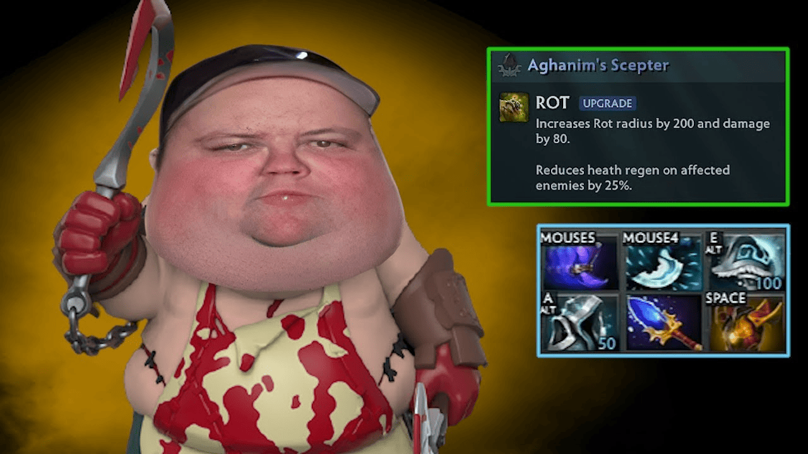

Pudge

Скиллы
-
Скилл 1: Meat Hook - Описание: Захватывает врага и притягивает его к
Pudge.
-
Скилл 2: Rot - Описание: Наносит урон врагам вокруг Pudge и замедляет
их.
-
Скилл 3: Flesh Heap - Описание: Увеличивает здоровье Pudge за счет
убитых врагов.
-
Ультимейт: Dismember - Описание: Удерживает врага и наносит ему урон.
Как играть
Стратегия игры за Pudge: Используйте Meat Hook для захвата врагов и Rot
для нанесения урона. Играйте агрессивно и старайтесь изолировать врагов от
команды.
Назад к списку персонажей